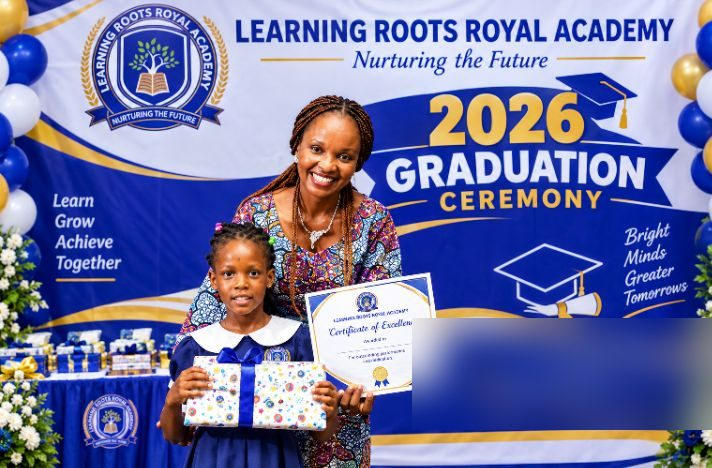

Learning Roots Royal Academy is a private school community based in Kofare, Jimeta, Yola — welcoming children from Nursery through Secondary school from across Nigeria and abroad.
We believe excellent education should combine high expectations with warmth, discipline with encouragement, and academic achievement with character.
Our school environment is designed to help children become thoughtful learners, responsible citizens and confident young people.
Real results from our maiden set of external examinations.
Led by our Founder & Chairman, and the team who run the school day to day.
Oversees the school's academic direction and day-to-day standards, keeping teaching and character formation moving together. Miss Aminu works closely with teaching staff to keep classroom quality consistent across every stage, from Nursery through Secondary, so that what a parent is promised at enrolment is what actually happens in the classroom.
Leads the school's operations and growth, turning the Founder's vision into the systems that run the school every day. Hajiya Fadimatu Raji oversees the school's finances, staffing and long-term expansion plans, working to see Learning Roots Royal Academy's standards carried into new communities across Nigeria.
Runs the school's daily administration — the first point of contact for parents and the person who keeps every department in step. From enrolment enquiries to the small logistics that make a school day run smoothly, Mrs Ooye is usually the first face a new family meets and the steady hand behind the scenes once they've joined.
